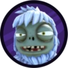

Plantas Extras
Tronco Flamejante

Planta de Garden Warfare 2 que inicialmente era um chefão do jogo, mas que, após a atualização "Trials of Gnomus", tornou-se um personagem bônus da equipe das plantas. Suas habilidades são: Escudo de Folhas, que reduz o dano recebido, porém o deixa mais lento; Bafo de Fogo, que queima quem estiver ao seu alcance; e, por fim, sua Fúria Gigatrônica, na qual suas chamas ficam azuis, fazendo com que ele atire mais rápido e cause dano contínuo de fogo.
Flor Silvestre

Assim como o Tronco, a Flor Silvestre era inicialmente um capanga em Battle for Neighborville, mas, com a chegada da atualização "Fall Festival", ela se tornou uma personagem jogável que possui as seguintes habilidades: Bomba de Semente, que causa 80 de dano ao zumbi; Vasinho, no qual ela pode renascer, ou seja, onde o vaso estiver, você poderá nascer a partir dele; e, por fim, o Dente-de-Leão, outro capanga que se tornou uma habilidade, permitindo que você o controle para explodir e pegar os zumbis de surpresa.
Zumbis Extras
Planador Cabra 3000
O Planador Cabra 3000, assim como o Tronco Flamejante, chegou ao Garden Warfare 2 na atualização "Trials of Gnomus" como um personagem bônus que possui as seguintes habilidades: Raio de Fortalecimento, que aumenta a força do zumbi atingido, fazendo com que ele cause mais dano; Megalaser, que causa bastante dano às plantas atingidas; e, por fim, a Cabra, que pode aumentar sua velocidade para se locomover mais rapidamente.
Cabeça de TV

O Zumbi Cabeça de TV veio junto com a Flor Silvestre na atualização "Fall Festival", e os dois possuem habilidades semelhantes, com apenas algumas mudanças. Suas habilidades são: Bombinha, que pode explodir instantaneamente, assim como a da Flor Silvestre, ou demorar um pouco caso não acerte ninguém; Balde, que é semelhante ao Vasinho; e, por fim, o Zumbinho Yeti, que, assim como o Dente-de-Leão, pode ser controlado e explodir, mas causa congelamento, deixando as plantas mais lentas.